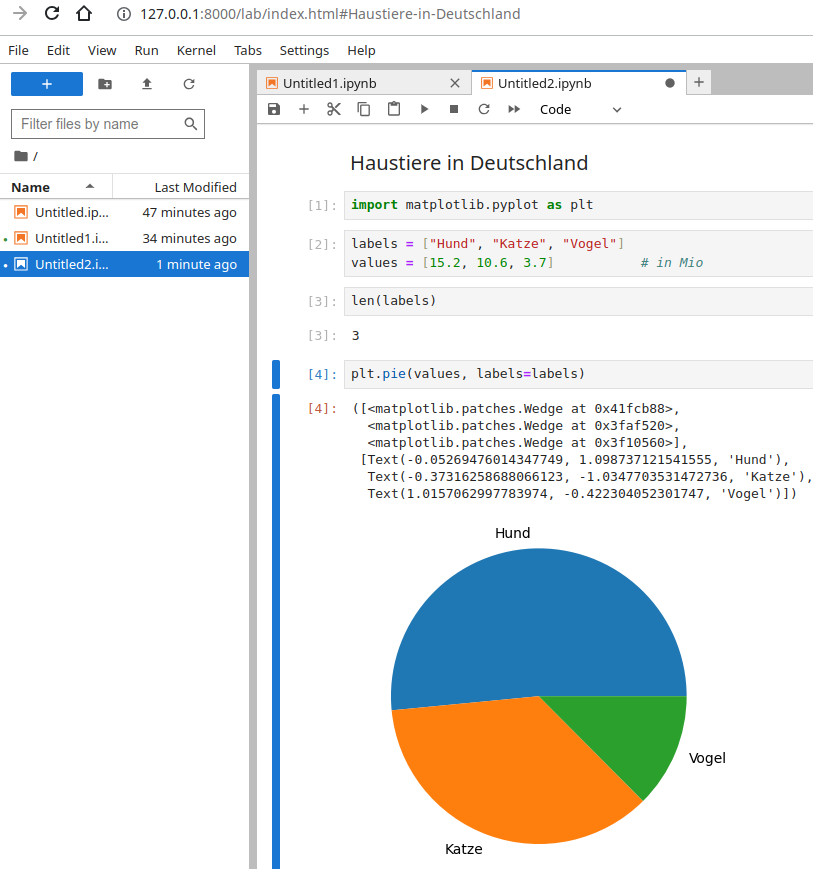
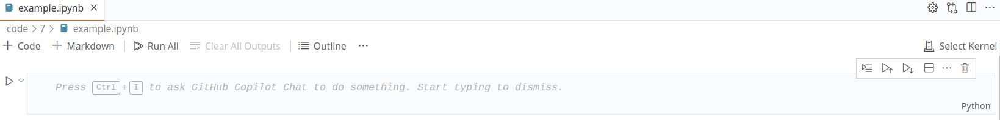

Prof. Dr.-Ing. Johannes Schildgen
johannes.schildgen@oth-regensburg.de
Programmieren 2 (Python)
Kapitel 7: Data-Science


Jupyter
Jupyter Notebook ist eine open-source Webanwendung, um interaktive wissenschaftliche Datenauswertungen und Berechnungen durchzuführen.
- Eingabe- und Ausgabezellen
- Code
- Text / Markdown
- Diagramme
- ...
Strg+Enter führt aktuelle Zelle aus.
.ipynb-Dateien lassen sich mit Jupyter Notebook, Jupyter Lite und auch mit Visual Studio Code öffnen.
Jupyter Notebooks in VS Code
- Select Kernel (oben rechts): Lautzeitumgebung (z. B. Python 3.10.12)
- Esc/Enter: Wechsel in den Kommandomodus / Editierenmodus
- A / B im Kommandomodus (+Code) fügt Code-Block ober-/unterhalb ein
- +Markdown fügt Text-Block hinzu:
# Überschrift,**fett**,*kursiv*,- Liste, ... - D D im Kommandomodus: aktuellen Block löschen
- Strg+Enter: Aktuelle Zelle ausführen
- Shift+Enter: Aktuelle Zelle ausführen und weiter zur nächsten Zelle
Übung 7.1
Erstellen Sie ein Jupyter Notebook (.ipynb) mit folgenden Inhalten:
- Markdown-Zelle mit Überschrift und Text
- Eine Zelle, in der Sie eine Funktion
fdefinieren $f(x) = 2x^2 + 5x - 8$
Rufen Sie die Funktion auch in der Zelle auf und geben Sie das Ergebnis aus. - Eine Zelle, in der Sie eine Liste mit 10 Zufallszahlen zwischen 0 und 100 erzeugen und diese Liste ausgeben.
- Verwenden Sie in einer weiteren Zelle List-Comprehension (siehe Kapitel 2), um eine neue Liste zu erzeugen, die $f(x)$ für alle Werte $x$ aus ihrer Liste aus der vorherigen Teilaufgabe enthält. Geben Sie die neue Liste aus.
Bibliotheken
Python-Bibliotheken für wissenschaftliche Berechnungen und zur Datenanalyse:
- NumPy - Nummerische Berechnungen mit NumPy-Arrays und Matrizen.
- Matplotlib - Erstellung von 2D-Plots und Diagrammen.
- pandas - Datenmanipulation, -filterung und -analyse auf DataFrames.
- SciPy - Optimierung, Integration, Interpolation, lineare Algebra und mehr.
- Scikit-Learn - Machine-Learning: Klassifikation, Regression, Clustering, ...
- ...
pip install numpy
pip install matplotlib
pip install pandas
pip install scipy
pip install scikit-learnNumPy
NumPy-Arrays
1-dimensional (Array) oder 2-dimensional (Matrix)
$\begin{pmatrix} 1 \\ 2 \\ 3 \end{pmatrix} \begin{pmatrix} 1 & 2 & 3 \\ 4 & 5 & 6 \end{pmatrix} \begin{pmatrix} 0 & 0 & 0 \\ 0 & 0 & 0 \end{pmatrix} \begin{pmatrix} 1 & 1 & 1 \\ 1 & 1 & 1 \end{pmatrix} \begin{pmatrix} 1 & 0 & 0 \\ 0 & 1 & 0 \\ 0 & 0 & 1 \end{pmatrix} \begin{pmatrix} 0 \\ 1 \\ 2 \end{pmatrix} \begin{pmatrix} 0 \\ 50 \\ 100 \end{pmatrix} $
NumPy-Arrays
dtype=... (Datentyp der Elemente)
int32, int64, float32, float64, complex
Informationen zum Array:
ndim- Anzahl der Dimensionen (1: Vektor, 2: Matrix)shape- Tupel mit Anzahl der Elemente pro Dimensionsize- Anzahl der Elementedtype- Datentyp der Elemente
Zugriff auf NumPy-Array-Elemente
$a = \begin{pmatrix} 1 \\ 2 \\ 3 \end{pmatrix}~~~b = \begin{pmatrix} 1 & 4 & 43 \\ 8 & 5 & 12 \end{pmatrix} $
NumPy-Array-Operationen
Beim Slicing (z. B. [0:3]) und Reshape wird keine Kopie erzeugt!
$c = \begin{pmatrix} 42 \\ 2 \\ 3 \end{pmatrix}~~~b = \begin{pmatrix} 42 & 2 & 3 \\ 4 & 5 & 6 \end{pmatrix}~~~d = \begin{pmatrix} 1 \\ 2 \\ 3 \end{pmatrix}~~~e = \begin{pmatrix} 42 & 4 \\ 2 & 5 \\ 3 & 6 \end{pmatrix} $
Rechnen mit NumPy-Arrays
Übung 7.2
Führen Sie in einem Jupyter Notebook folgende Berechnungen durch:
- Matrix-Vektor-Multiplikation: $\begin{pmatrix} 2 & 2 & 0 \\ 2 & -1 & -3 \\ 1 & 0 & 1\end{pmatrix} \cdot \begin{pmatrix} 3 \\ 1 \\ 0 \end{pmatrix}$
- Erzeugen Sie aus der Matrix aus 1. eine Kopie, bei der Sie alle negativen Zahlen durch 0 ersetzen.
- Geben Sie die transponierte Matrix von der Matrix aus 1. aus.
- Matrix-Multiplikation: $\begin{pmatrix} 1 & -2 & 3 \\ -4 & 5 & -6 \end{pmatrix} \cdot \begin{pmatrix} -1 & 2 \\ -3 & 4 \\ -5 & 6 \end{pmatrix}$
- Finden Sie heraus, wie Sie die Determinate der Matrix aus 1. berechnen.
Funktionen
Funktionen in NumPy (z. B. np.sin) sowie elementare Rechenoperationen
(+, -, *, ...) liefern bei Eingabe eines NumPy-Arrays wieder einen NumPy-Array.
Lambda-Funktionen in Python: lambda x: ...
Simple Funktion, die nur über einen einzigen Ausdruck definiert wird.
matplotlib
plot([X],Y,[fmt], ...)
fmt: Formatierung (Farbe und Linienstil)
- durchgezogene Linie
-- gestrichelt
o einzelne Punkte
Übung 7.3
Erzeugen Sie in einem Jupyter Notebook folgende Graphen:
- $f(x) = 5x² + 2x - 3$
- $f(x) = (cos(x))^2$
- 100 x-Werte (von 0 bis 99) und 100 zufällige y-Werte (zwischen 0 und 100)
Mehrere Kurven in eine Grafik
Oder alternativ plt.plot mehrfach aufrufen:
Achsenbeschriftung, etc.
plt.subplots() liefert ein Figure- und ein Axes-Objekt:
Übung 7.4
Erzeugen Sie in einem Jupyter Notebook einen Graphen, der Peters und Utes Vermögen über die nächsten 25 Jahre darstellt:
- Peter und Ute besitzen zu Beginn jeweils 800 EUR.
- Peter legt sein Geld zu 4% Zinsen im Jahr an.
- Ute kauft sich direkt zu Beginn ein Balkonkraftwerk für 800 EUR, damit ist ihr ganzes Geld weg. Aber sie spart nun jedes Jahr 100 EUR Stromkosten.
Das Balkonkraftwerk selbst zählt nicht zum Vermögen. Sie können aber Utes kumulierte Stromersparnis zu Ihrem Vermögen dazuzählen, weil Peter entsprechende Mehrausgaben für seinen Strombezug bezahlt und Ute nicht.
Weitere Diagrammtypen
Balkendiagramm
Kuchendiagramm
pandas
Series
Eindimensionale Datenstruktur.
Jeder Eintrag hat einen Index (standardmäßig 0, 1, 2, ...) und einen Wert.
0 1
1 2
2 3
dtype: int64
DataFrames
Zweidimensionale Datenstruktur (Tabelle mit Zeilen und Spalten).
Zeilen haben einen Index (standardmäßig 0, 1, 2, ...), Spalten haben Namen.
| A | B | C | |
|---|---|---|---|
| 0 | 1 | 2 | 3 |
| 1 | 4 | 5 | 6 |
Pandas-Series
0 3
1 9
dtype: int64
0 3
1 9
2 1
4 4
dtype: int64
Series mit eigenen Indizes:
A 3
B 9
dtype: int64
A 3
C 1
dtype: int64
Pandas-DataFrames
0 1
1 4
dtype: int64
| A | B | C | |
|---|---|---|---|
| 0 | 1 | 2 | 3 |
| A | C | |
|---|---|---|
| 0 | 1 | 3 |
| 1 | 4 | 6 |
| A | C | |
|---|---|---|
| 0 | 1 | 3 |
Betrachten von Zeilen (verändert Dataframe nicht, außer wenn inplace=True):
DataFrame: Methoden
loc - Auswahl bestimmter Zeilen und Spalten
pd.read_csv - Datei einlesen
1;Russia;145,934,462;Eastern Europe
2;Germany;83,783,942;Western Europe| Country | Population | Region | |
|---|---|---|---|
| 29 | Albania | 2877797 | Southern Europe |
| ... | ... | ... | ... |
Übung 7.5
Laden Sie sich von der Webseite des Studierendenwerks (stwno.de) den Mensaplan als CSV-Datei herunter und führen Sie in einem Jupyter Notebook folgende Operationen durch:
- Lesen Sie die CSV-Datei in einen Pandas-Dataframe ein. Verwenden Sie die Option
encoding="iso-8859-1", damit Umlaute korrekt dargestellt werden. Geben Sie nur die ersten Zeilen aus:data.head() - Wie viele Zeilen hat der Dataframe?
- Was sind die drei teuersten Essen?
- Was gibt es am Dienstag alles zu essen?
- Welche Suppe gibt es am Freitag?
- Löschen Sie die Spalte
preis - Wie viel % sind Mitarbeiterpreise im Schnitt teurer als Studierendenpreise?
re - Reguläre Ausdrücke (RegEx)
. | Beliebiges Zeichen |
^ | String-Anfang |
$ | String-Ende |
[0-9\.] | Eines der Zeichen |
[^a-c] | Alle Zeichen, außer diese |
A|S | Regex A oder S |
\w,\d,\s | [A-Za-z0-9_], Zahl, Leerz. |
\$ | Sonderzeichen mit \ escapen |
* | 0 mal oder öfter |
+ | Mind. einmal |
? | Keinmal oder einmal |
{m} | Genau m mal |
{m,n} | Zwischen m und n mal |
{m,} | Mind. m mal |
\W,\D,\S | Nicht \w,\d,\s |
Übung 7.6
Dies ist eine Fortsetzung der vorherigen Übung. Fahren Sie mit den Operationen in Ihrem Jupyter Notebook, in welchem Sie den Mensaplan in einen Dataframe geladen haben, fort.
- Entfernen Sie mit folgendem Kommando die Zahlen aus den Warengruppen (z. B.
HG1→HG):
data["warengruppe"] = data["warengruppe"].str.replace(r'\d+', '',
regex=True)- Was ist der durchschnittliche Preis für Hauptpreisen für Studierende?
- Entfernen Sie alles, was in den Essensbezeichnungen in Klammern steht.
- Wandeln Sie die Datumswerte in
datetime-Objekte um:
data["datum"] = pd.to_datetime(data["datum"], format="%d.%m.%Y")- Was gibt es heute zu essen?
- Erzeugen Sie ein Kuchendiagramm für die Anzahl vegetarischer, veganer und fleischhaltiger Hauptgerichte.
SciPy
fun: -0.125
hess_inv: array([[0.25]])
jac: array([1.49011612e-08])
message: 'Optimization terminated successfully.'
nfev: 6
nit: 2
njev: 3
status: 0
success: True
x: array([0.74999999])Interpolation / Extrapolation
scipy.interpolate.interp1d erzeugt eine lineare Interpolation:
fsolve - Nullstellen finden
Übung 7.7
- Erzeugen Sie für die x-Werte 0, 10, 20, 30, 40 und 50 jeweils einen zufälligen y-Wert zwischen 0 und 100. Führen Sie eine kubische Interpolation durch und stellen Sie das Ergebnis grafisch dar.
- In Übung 7.4 haben Sie eine grafische Lösung gefunden, nach wie vielen Jahren sich Utes Investment in ein Balkonkraftwerk gelohnt hat. Nutzen Sie SciPy, um diese Lösung nummerisch zu ermitteln.
Scikit-Learn
Machine-Learning-Bibliothek für Python.
Lineare Regression
Übung 7.8
Dies ist eine Fortsetzung von den Übungsaufgaben auf Ihrem Mensa-Dataset.
- Trainieren Sie ein Modell, welches in der Lage sein soll, anhand des Studierenden-Preises eines Essens den entsprechenden Mitarbeiter-Preis vorherzusagen.
- Testen Sie Ihr Modell: Wie wäre der Mitarbeiter-Preis eines Essens, welches für Studierende 6.50 EUR kostet?
- Laden Sie sich eine weitere CSV mit anderen Mensa-Essen (z. B. von letzter oder nächster Woche) herunter. Fügen Sie in dem entsprechenden DataFrame eine Spalte hinzu, in der Sie die Bediensteten-Preise anhand Ihres Modells vorhersagen. Vergleichen Sie die Vorhersagen mit den tatsächlichen Preisen.
- Verwenden Sie nun als Features, mit denen Sie Ihr Modell trainieren, nicht nur den Studierenden-Preis, sondern den Studierenden- und Gäste-Preis. Die Kombination aus beidem soll genutzt werden, um den Bediensteten-Preis vorherzusagen. Macht dieses Modell bessere Vorhersagen?
Klassifikation
| datum | tag | warengruppe | name | stud | bed | gast | wg_pred | |
|---|---|---|---|---|---|---|---|---|
| 37 | B4 | Pommes | 1.40 | 1.50 | 2.0 | B1 |
Zusammenfassung
- Jupyter Notebooks
- NumPy: Arrays, Matrizen, Vektoren, ...
- matplotlib: Plotten von Grafiken
- pandas: Series, Dataframes
- scipy: Optimierung (Minimum, Nullstellen, ...), Interpolation
- scikit-learn: Machine Learning, Lineare Regression, Klassifikation